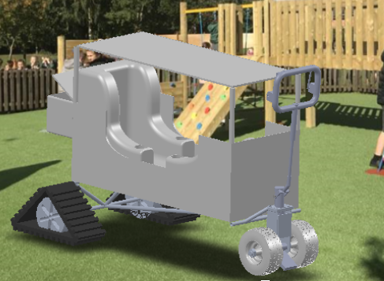
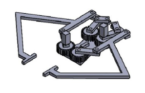
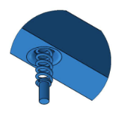

Work
Projects
A showcase of engineering and design work highlighting CAD modelling, DFMA processes, mechanical analysis, and problem-solving across academic, personal, and team-based projects. Click any project to learn more.

Capstone · 2025-2026
Automated Garden Hose Caddy
Capstone · Mechanical Design · Ergonomics · CAD · Structural Analysis
Redesigned an existing garden hose caddy into a market-ready product by eliminating manual cranking and improving usability through automated retraction and gas spring-assisted height adjustment. Team project supervised by Dr. Filippo Salustri at TMU.

Tractor Pull Slot Car
CAD · CNC Machining · FDM 3D Printing · Competition
Designed and manufactured a slot car to climb a 30° inclined track under loads up to 50g. Awarded second place in competition.

Redesign of Staples Sharpener
DFMA · Product Redesign · Assembly Analysis
DFMA-driven redesign of a consumer electric pencil sharpener to reduce part count, simplify assembly, and improve manufacturability.

The "Stragon" - Assistive Child Transport System
Human-Centred Design · CAD · Inclusive Design
Wagon-stroller hybrid improving safety, accessibility, and user comfort. Reduced user exclusion rates from 15.5% to 11.8%.

Two-Finger Robotic Gripper
Mechanism Design · Kinematic Analysis · MATLAB
Functional two-finger robotic gripper for precise grasping, with full force, torque, and kinematic analysis.

Helicopter Tail Rotor Vibration Absorber
Dynamic Systems · SDOF Model · MATLAB Simulation
Lightweight spring-mass absorber system for helicopter tail rotors, optimised across the 1250-1750 rpm operating range.

Planetary Gearbox
Personal CAD Project · SolidWorks Assembly
Personal SolidWorks CAD model of a full planetary gearbox with sun, planet, and ring gear configurations.